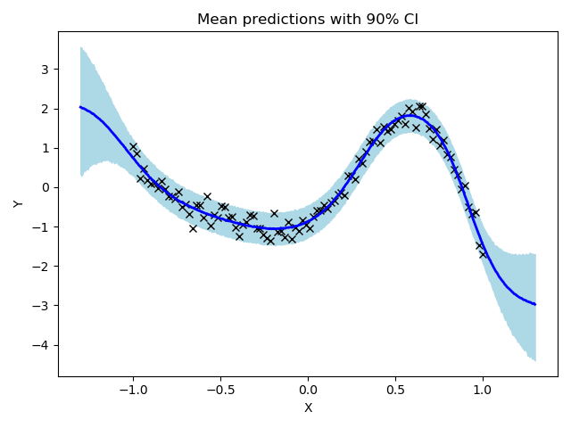

Note
Click here to download the full example code
Bayesian Neural Network¶
We demonstrate how to use NUTS to do inference on a simple (small) Bayesian neural network with two hidden layers.
Out:
mean std median 5.0% 95.0% n_eff r_hat
prec_obs 18.15 2.70 17.98 14.04 22.78 2600.90 1.00
w1[0,0] 0.00 1.21 -0.04 -1.90 2.05 155.76 1.01
w1[0,1] -0.12 1.14 -0.19 -1.96 1.83 234.32 1.00
w1[0,2] -0.05 1.24 -0.05 -2.14 1.90 205.45 1.01
w1[0,3] -0.04 1.08 -0.05 -1.91 1.67 207.63 1.00
w1[0,4] 0.07 1.09 0.10 -1.55 2.03 258.62 1.00
w1[1,0] 0.05 1.17 0.08 -1.72 1.93 143.30 1.00
w1[1,1] 0.18 1.12 0.26 -1.54 1.94 242.95 1.00
w1[1,2] -0.04 1.15 -0.07 -1.83 1.71 223.11 1.01
w1[1,3] 0.04 1.21 0.06 -1.80 1.92 112.45 1.01
w1[1,4] -0.10 1.18 -0.15 -1.89 1.75 215.39 1.00
w1[2,0] 0.03 1.12 0.05 -1.81 1.79 214.06 1.00
w1[2,1] 0.18 1.09 0.19 -1.58 1.96 242.82 1.00
w1[2,2] -0.02 1.12 0.01 -1.85 1.70 195.65 1.01
w1[2,3] 0.03 1.18 0.06 -1.89 1.92 99.41 1.01
w1[2,4] -0.13 1.13 -0.15 -2.12 1.54 198.12 1.00
w2[0,0] -0.00 1.07 -0.03 -1.79 1.74 941.25 1.00
w2[0,1] -0.05 1.04 -0.06 -1.87 1.49 801.72 1.00
w2[0,2] -0.02 1.07 -0.03 -1.69 1.77 900.19 1.00
w2[0,3] -0.01 1.05 0.01 -1.70 1.72 1029.10 1.00
w2[0,4] 0.04 1.09 0.07 -1.58 1.90 1047.75 1.00
w2[1,0] 0.07 1.09 0.06 -1.63 1.86 1085.51 1.00
w2[1,1] -0.06 1.04 -0.06 -1.66 1.74 870.78 1.00
w2[1,2] -0.03 1.06 -0.05 -1.84 1.64 1024.58 1.00
w2[1,3] -0.00 1.05 0.01 -1.76 1.62 1191.48 1.00
w2[1,4] 0.09 1.07 0.10 -1.61 1.83 940.84 1.00
w2[2,0] -0.01 1.04 0.01 -1.68 1.61 1043.02 1.00
w2[2,1] 0.03 1.05 0.03 -1.78 1.61 836.99 1.00
w2[2,2] 0.03 1.09 0.06 -1.81 1.74 867.19 1.00
w2[2,3] -0.05 1.08 -0.04 -1.92 1.55 815.75 1.00
w2[2,4] -0.02 1.05 -0.03 -1.73 1.66 905.13 1.00
w2[3,0] 0.01 1.08 0.04 -1.74 1.80 933.09 1.00
w2[3,1] 0.07 1.10 0.06 -1.54 1.94 664.10 1.00
w2[3,2] -0.02 1.03 -0.03 -1.55 1.77 987.24 1.00
w2[3,3] -0.02 1.08 -0.00 -1.85 1.60 1038.42 1.00
w2[3,4] 0.03 1.09 0.07 -1.80 1.73 701.64 1.00
w2[4,0] -0.01 1.03 -0.01 -1.69 1.61 1023.85 1.00
w2[4,1] -0.04 1.08 -0.06 -1.72 1.77 1025.66 1.00
w2[4,2] 0.01 1.05 -0.00 -1.64 1.76 969.61 1.00
w2[4,3] 0.00 1.08 -0.05 -1.71 1.75 1083.19 1.00
w2[4,4] 0.04 1.05 0.05 -1.69 1.75 916.94 1.00
w3[0,0] -0.12 1.48 -0.13 -2.38 2.47 399.33 1.00
w3[1,0] 0.06 1.53 0.03 -2.30 2.61 324.89 1.00
w3[2,0] -0.03 1.49 -0.04 -2.45 2.34 318.64 1.00
w3[3,0] -0.01 1.48 0.04 -2.24 2.50 402.20 1.00
w3[4,0] 0.04 1.50 0.05 -2.49 2.45 351.53 1.00
Number of divergences: 8
MCMC elapsed time: 27.148072957992554
import argparse
import os
import time
import matplotlib
import matplotlib.pyplot as plt
import numpy as np
from jax import vmap
import jax.numpy as jnp
import jax.random as random
import numpyro
from numpyro import handlers
import numpyro.distributions as dist
from numpyro.infer import MCMC, NUTS
matplotlib.use('Agg') # noqa: E402
# the non-linearity we use in our neural network
def nonlin(x):
return jnp.tanh(x)
# a two-layer bayesian neural network with computational flow
# given by D_X => D_H => D_H => D_Y where D_H is the number of
# hidden units. (note we indicate tensor dimensions in the comments)
def model(X, Y, D_H):
D_X, D_Y = X.shape[1], 1
# sample first layer (we put unit normal priors on all weights)
w1 = numpyro.sample("w1", dist.Normal(jnp.zeros((D_X, D_H)), jnp.ones((D_X, D_H)))) # D_X D_H
z1 = nonlin(jnp.matmul(X, w1)) # N D_H <= first layer of activations
# sample second layer
w2 = numpyro.sample("w2", dist.Normal(jnp.zeros((D_H, D_H)), jnp.ones((D_H, D_H)))) # D_H D_H
z2 = nonlin(jnp.matmul(z1, w2)) # N D_H <= second layer of activations
# sample final layer of weights and neural network output
w3 = numpyro.sample("w3", dist.Normal(jnp.zeros((D_H, D_Y)), jnp.ones((D_H, D_Y)))) # D_H D_Y
z3 = jnp.matmul(z2, w3) # N D_Y <= output of the neural network
# we put a prior on the observation noise
prec_obs = numpyro.sample("prec_obs", dist.Gamma(3.0, 1.0))
sigma_obs = 1.0 / jnp.sqrt(prec_obs)
# observe data
numpyro.sample("Y", dist.Normal(z3, sigma_obs), obs=Y)
# helper function for HMC inference
def run_inference(model, args, rng_key, X, Y, D_H):
start = time.time()
kernel = NUTS(model)
mcmc = MCMC(kernel, args.num_warmup, args.num_samples, num_chains=args.num_chains,
progress_bar=False if "NUMPYRO_SPHINXBUILD" in os.environ else True)
mcmc.run(rng_key, X, Y, D_H)
mcmc.print_summary()
print('\nMCMC elapsed time:', time.time() - start)
return mcmc.get_samples()
# helper function for prediction
def predict(model, rng_key, samples, X, D_H):
model = handlers.substitute(handlers.seed(model, rng_key), samples)
# note that Y will be sampled in the model because we pass Y=None here
model_trace = handlers.trace(model).get_trace(X=X, Y=None, D_H=D_H)
return model_trace['Y']['value']
# create artificial regression dataset
def get_data(N=50, D_X=3, sigma_obs=0.05, N_test=500):
D_Y = 1 # create 1d outputs
np.random.seed(0)
X = jnp.linspace(-1, 1, N)
X = jnp.power(X[:, np.newaxis], jnp.arange(D_X))
W = 0.5 * np.random.randn(D_X)
Y = jnp.dot(X, W) + 0.5 * jnp.power(0.5 + X[:, 1], 2.0) * jnp.sin(4.0 * X[:, 1])
Y += sigma_obs * np.random.randn(N)
Y = Y[:, np.newaxis]
Y -= jnp.mean(Y)
Y /= jnp.std(Y)
assert X.shape == (N, D_X)
assert Y.shape == (N, D_Y)
X_test = jnp.linspace(-1.3, 1.3, N_test)
X_test = jnp.power(X_test[:, np.newaxis], jnp.arange(D_X))
return X, Y, X_test
def main(args):
N, D_X, D_H = args.num_data, 3, args.num_hidden
X, Y, X_test = get_data(N=N, D_X=D_X)
# do inference
rng_key, rng_key_predict = random.split(random.PRNGKey(0))
samples = run_inference(model, args, rng_key, X, Y, D_H)
# predict Y_test at inputs X_test
vmap_args = (samples, random.split(rng_key_predict, args.num_samples * args.num_chains))
predictions = vmap(lambda samples, rng_key: predict(model, rng_key, samples, X_test, D_H))(*vmap_args)
predictions = predictions[..., 0]
# compute mean prediction and confidence interval around median
mean_prediction = jnp.mean(predictions, axis=0)
percentiles = np.percentile(predictions, [5.0, 95.0], axis=0)
# make plots
fig, ax = plt.subplots(1, 1)
# plot training data
ax.plot(X[:, 1], Y[:, 0], 'kx')
# plot 90% confidence level of predictions
ax.fill_between(X_test[:, 1], percentiles[0, :], percentiles[1, :], color='lightblue')
# plot mean prediction
ax.plot(X_test[:, 1], mean_prediction, 'blue', ls='solid', lw=2.0)
ax.set(xlabel="X", ylabel="Y", title="Mean predictions with 90% CI")
plt.savefig('bnn_plot.pdf')
plt.tight_layout()
if __name__ == "__main__":
assert numpyro.__version__.startswith('0.4.0')
parser = argparse.ArgumentParser(description="Bayesian neural network example")
parser.add_argument("-n", "--num-samples", nargs="?", default=2000, type=int)
parser.add_argument("--num-warmup", nargs='?', default=1000, type=int)
parser.add_argument("--num-chains", nargs='?', default=1, type=int)
parser.add_argument("--num-data", nargs='?', default=100, type=int)
parser.add_argument("--num-hidden", nargs='?', default=5, type=int)
parser.add_argument("--device", default='cpu', type=str, help='use "cpu" or "gpu".')
args = parser.parse_args()
numpyro.set_platform(args.device)
numpyro.set_host_device_count(args.num_chains)
main(args)
Total running time of the script: ( 0 minutes 29.150 seconds)